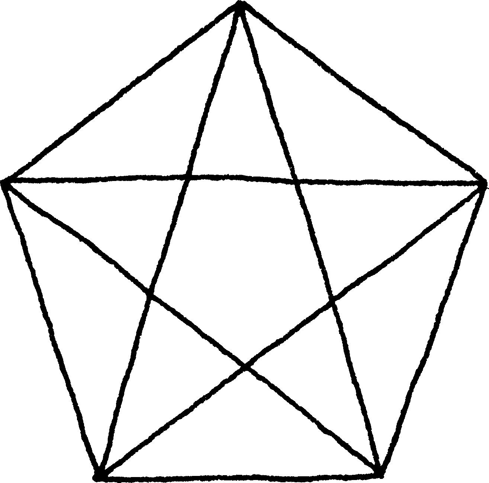
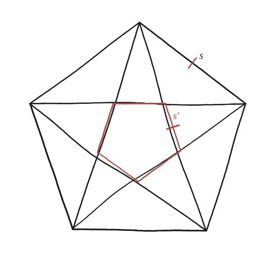

Quant fa el pentàgon petit?

Només cal una raó, no una mida
La pregunta no demana cap mida en centímetres: demana un factor d'escala —quantes vegades més petit és el pentàgon que formen els cinc punts on es creuen les diagonals, comparat amb el pentàgon gran de partida.
La peça que falta: la raó diagonal/costat
A la Qüestió 33 es demostra, sense trigonometria, que la raó φ entre la diagonal i el costat d'un pentàgon regular compleix φ²=φ+1, i que aquesta raó val exactament φ=(1+√5)/2≈1,618 —el nombre auri.
El pentàgon petit, marcat en sanguina
El pentàgon interior del pentagrama és, precisament, el que formen els cinc punts d'encreuament de les diagonals. Cada costat d'aquest pentàgon petit és, a la vegada, la base del petit triangle central que es forma allà on dues diagonals es tallen prop d'una punta.

La raó s'aplica dues vegades
Val la pena fer-ho amb la diagonal a la mà, en lloc de dir només que «la raó s'aplica dues vegades». Prenem el pentàgon gran de costat 1, de manera que cada diagonal fa φ. Cada diagonal és tallada per dues altres diagonals en dos punts, que la parteixen en tres trossos: dos d'exteriors, iguals per simetria, i un de central. El central és, precisament, un costat del pentàgon petit.
Els trossos exteriors es mesuren així. Un punt de creuament, junt amb els dos vèrtexs del pentàgon que té més a prop, forma un triangle: els seus dos costats des del punt de creuament són trossos exteriors de les dues diagonals que s'hi creuen, i la seva base és un costat sencer del pentàgon gran. Comptant-ne els angles com a la Qüestió 31, aquest triangle és un 36°-36°-108°: exactament el mateix tipus que el triangle «A» d'allà, on les cames eren costats del pentàgon (1) i la base era una diagonal (φ). En un triangle d'aquesta forma la base és sempre φ vegades la cama. Aquí la base val 1, de manera que cada tros exterior val 1/φ.
El tros central és, doncs, el que queda: φ − 2/φ. Amb la identitat φ²=φ+1 això se simplifica sol — φ − 2/φ = (φ²−2)/φ = (φ−1)/φ, i com que φ−1 = 1/φ, queda 1/φ². El costat del pentàgon petit és el del gran dividit per φ², no per φ: la raó s'aplica dues vegades, i ara es veu per què.
El pentàgon petit del pentagrama té costat 1/φ² respecte al gran (φ el nombre auri; ≈0,382 vegades més petit). Surt de partir una diagonal —de llargada φ, amb costat gran 1— en els seus tres trossos: els dos exteriors fan 1/φ cadascun, per un triangle 36°-36°-108° de base un costat del pentàgon, i el central, que és el costat del pentàgon petit, fa φ−2/φ = 1/φ².
Comprovació
Amb costat del pentàgon gran = 1: costat del petit = 1/φ² ≈0,382. Comprovant amb la identitat φ²=φ+1: 1/φ² = 1/(φ+1) = 2−φ ≈ 2−1,618 = 0,382, coincidint.